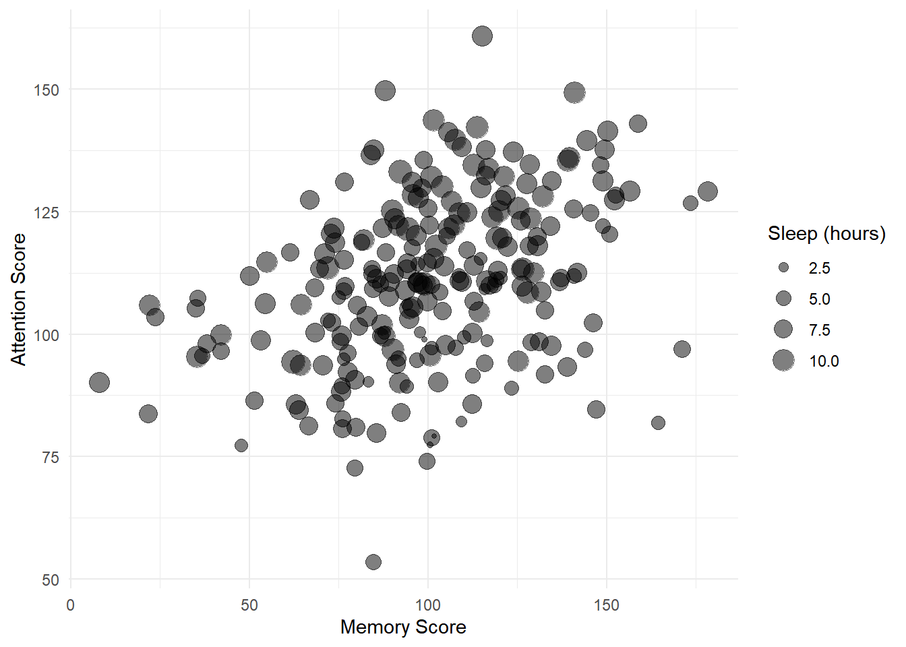

Exercise
Now you will practise using ANOVA and Bayes Factors to compare models with a new dataset.
Scenario: A researcher would like to construct a model to predict scores in a memory task from several different variables. The data from 234 individuals are stored in the memory_data dataset, which are located at https://bit.ly/37pOTrC.
Use read_csv to load in the data at the link above to the variable memory_data and preview it with head().
memory_data <- read_csv('https://bit.ly/37pOTrC')
memory_data %>% head()
> # A tibble: 6 x 7
> attention sex blueberries iq age sleep memory_score
> <dbl> <dbl> <dbl> <dbl> <dbl> <dbl> <dbl>
> 1 95.8 1 308 99.9 44.9 9.94 128.
> 2 66.7 1 270 137. 29.4 8.04 127.
> 3 102. 1 442 110. 31.9 11.0 118.
> 4 36.9 1 219 110. 27.9 5.28 95.5
> 5 91.7 0 450 119. 36.7 9.30 122.
> 6 146. 1 255 85.6 23.9 7.05 102.About the data:
attention: sustained attention score (higher = better attention)
sex: 0 = female, 1 = male
blueberries: average number of blueberries consumed per year
iq: the individual’s IQ
age: age of person in years
sleep: average hours of sleep per night
memory_score: memory test score
The researcher wants to test whether attention and sleep predict memory_score, but after controlling for iq and age (she suspects memory varies with iq and age to being with).
She therefore wants to use a hierarchical regression approach to determine whether attention and sleep explain additional variance in memory_score over and above iq and age.
1. First, fit a linear model to determine the extent to which memory_score is predicted by iq and age. Store the results in memory1.
# specify the baseline model
memory1 <- lm(memory_score ~ iq + age, data = memory_data)
# see the model results
summary(memory1)
>
> Call:
> lm(formula = memory_score ~ iq + age, data = memory_data)
>
> Residuals:
> Min 1Q Median 3Q Max
> -44.154 -11.754 0.732 11.608 40.790
>
> Coefficients:
> Estimate Std. Error t value Pr(>|t|)
> (Intercept) 71.1669 9.0796 7.838 1.67e-13 ***
> iq 0.1073 0.0699 1.534 0.126
> age 0.8220 0.1461 5.627 5.27e-08 ***
> ---
> Signif. codes: 0 '***' 0.001 '**' 0.01 '*' 0.05 '.' 0.1 ' ' 1
>
> Residual standard error: 16.1 on 231 degrees of freedom
> Multiple R-squared: 0.1303, Adjusted R-squared: 0.1228
> F-statistic: 17.31 on 2 and 231 DF, p-value: 9.875e-08
2. Next, add attention and sleep to the model, storing your results in memory2.
# specify the next model
memory2 <- lm(memory_score ~ iq + age + attention + sleep, data = memory_data)
# show the results
summary(memory2)
>
> Call:
> lm(formula = memory_score ~ iq + age + attention + sleep, data = memory_data)
>
> Residuals:
> Min 1Q Median 3Q Max
> -28.935 -8.555 1.713 8.450 31.384
>
> Coefficients:
> Estimate Std. Error t value Pr(>|t|)
> (Intercept) 9.60112 8.57889 1.119 0.264246
> iq 0.18673 0.05451 3.426 0.000726 ***
> age 0.86579 0.11308 7.656 5.32e-13 ***
> attention 0.22894 0.02757 8.302 8.88e-15 ***
> sleep 3.68609 0.39328 9.373 < 2e-16 ***
> ---
> Signif. codes: 0 '***' 0.001 '**' 0.01 '*' 0.05 '.' 0.1 ' ' 1
>
> Residual standard error: 12.46 on 229 degrees of freedom
> Multiple R-squared: 0.4839, Adjusted R-squared: 0.4749
> F-statistic: 53.68 on 4 and 229 DF, p-value: < 2.2e-16
3. Now, compare the memory1 and memory2 models using anova()
anova(memory1, memory2)
> Analysis of Variance Table
>
> Model 1: memory_score ~ iq + age
> Model 2: memory_score ~ iq + age + attention + sleep
> Res.Df RSS Df Sum of Sq F Pr(>F)
> 1 231 59912
> 2 229 35554 2 24359 78.447 < 2.2e-16 ***
> ---
> Signif. codes: 0 '***' 0.001 '**' 0.01 '*' 0.05 '.' 0.1 ' ' 1
Answer the following questions:
A model with
iqandageas predictors explains % of the variance inmemory_scoresA model with
iq,age,attentionandsleepas predictors explains % of the variance inmemory_scoresCalculate the additional variance explained by the second model: Change in \(R^2\) = %
The ANOVA comparing models can be reported as: F(, ) = , p < .001.
Is there a statistically significant improvement in the prediction of
memory_scoresas a result of addingattentionandsleepto the model?
Now use Bayes Factors to determine how much more likely the memory2 model is than the memory1 model .
Determine the Bayes Factor for
memory1Determine the Bayes Factor for
memory2Compare the Bayes Factors for
memory2andmemory1
# Store the Bayes Factor for the first model in memory1.BF
memory1.BF <- lmBF(memory_score ~ iq + age, data = as.data.frame(memory_data) )
# Store the Bayes Factor for the second model in memory2.BF
memory2.BF <- lmBF(memory_score ~ iq + age + attention + sleep, data = as.data.frame(memory_data) )
# Compute the Bayes Factors for memory2.BF vs memory1.BF
memory2.BF / memory1.BF
> Bayes factor analysis
> --------------
> [1] iq + age + attention + sleep : 4.168455e+23 ±0%
>
> Against denominator:
> memory_score ~ iq + age
> ---
> Bayes factor type: BFlinearModel, JZS
Answer the following questions:
The Bayes Factor comparing
memory2andmemory1to (2 decimal places) is e+ .Does the Bayes Factor support the conclusions from the ANOVA?
Yes! The Bayes Factor is equal to \(4.17 \times 10^{23}\), and this therefore strongly supports the inclusion of attention and sleep in the model already containing iq and age.
Extra exercises, if there’s time
1.
The researcher wishes to predict the memory_score for a new individual with iq = 105, age = 27, attention = 90, sleep = 8. Determine the prediction.
Hint: in a previous session, you have previously used the predict() function to do this.
- The predicted
memory_scoreis
# create tibble for the new data
new_data <- tibble(iq = 105, age = 27, attention = 90, sleep = 8)
# use predict to derive prediction from new data
predict(memory2, new_data)
> 1
> 102.6768
2.
Create a scatterplot of attention against memory_score, with the size of each point indicating the hours of sleep
memory_data %>%
ggplot(aes(x = attention, y = memory_score, size = sleep)) +
geom_point(alpha = 0.5) + # alpha=0.5 makes points 50% transparent
xlab('Memory Score') +
ylab('Attention Score') +
labs(size="Sleep (hours)")
3.
The researcher is interested to know whether annual consumption of blueberries has any bearing on memory_scores, and so wants to add blueberries to the model in memory2.
Determine the Bayes Factor comparing memory2 with a model that additionally contains blueberries.
The Bayes Factor for the model comparison is (to 2 decimal places)
The Bayes Factor indicates that the model with
blueberriesis than the model without it.Should the researcher add
blueberriesto the model?
# add blueberries to memory2; store in memory3.BF
memory3.BF <- lmBF(memory_score ~ iq + age + attention + sleep + blueberries, data = as.data.frame(memory_data) )
# calculate the BF for memory3 vs memory2
memory3.BF / memory2.BF
> Bayes factor analysis
> --------------
> [1] iq + age + attention + sleep + blueberries : 0.1663574 ±0%
>
> Against denominator:
> memory_score ~ iq + age + attention + sleep
> ---
> Bayes factor type: BFlinearModel, JZS